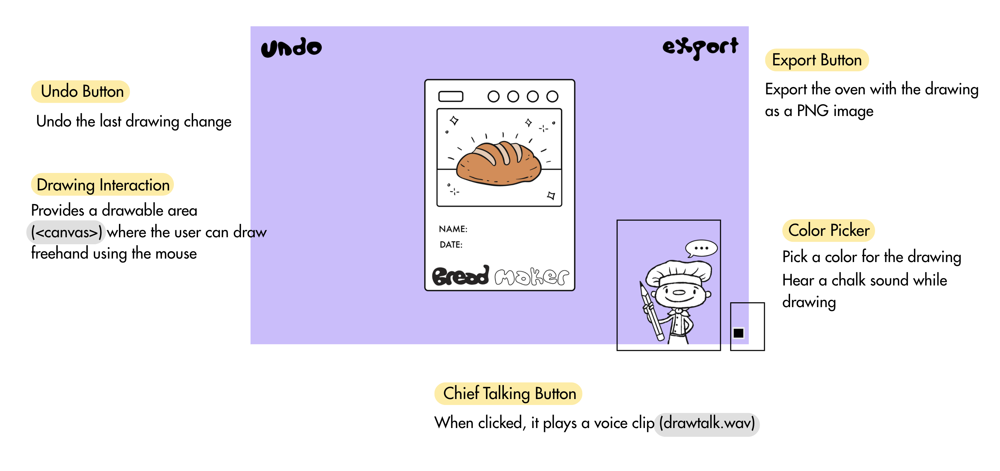

Judgments of PurposeMy desired outcome for the project |
The aim of the Bread Maker project was to create an engaging, interactive web experience that simulates a number of bread-making steps in a stylized, interactive form. I wanted users to move through a mini adventure—arriving at the home page, adding ingredients, interacting with dough, and finally drawing on the toasted bread. The goal was to create something with the feel of a playful digital cooking toy, combining touch interactions, storytelling, and imagination. |
Judgments of WorthWhat values, besides novelty, were important for the project? |
Apart from novelty, I valued user engagement, creativity, and accessibility. I aimed to make each page approachable for a general audience without prior instructions, encouraging exploration through intuitive design. I also wanted to provide space for self-expression, especially on the drawing page where users can decorate the oven. These values helped guide the interaction and visual design throughout. |
Judgments of FramingWhat were the limitations (conceptual and/or technical) you placed on the project's design space? |
Conceptually, I had thought of the project as a series of connected, small activities in terms of bread making.
But one fundamental constraint was that
these elements were not properly integrated.
Each page—home, add ingredients, dough interaction, drawing—is isolated from the others,
but they don't influence each other significantly.
Technically, I chose lightweight tools like HTML, CSS, JavaScript, and some Matter.js to keep the project browser-friendly and manageable. With six pages to build (some with overlapping function), I had to carefully plan and divide my time. Pages like the ingredient selection and dough interaction were especially challenging, as I had no prior experience with interactive visuals or morphing shapes. These required extensive research, trial and error, and pushed my technical skills. While the limitations helped focus the project, they also restricted deeper interaction and stronger page-to-page connections. For Example:The ingredients selected on the 'Add Ingredients' page do not affect the dough's behavior on the next page. Similarly, the drawing page, where users decorate the final bread, is visually appealing but doesn’t reflect the earlier steps, such as the kind of dough made or the type of ingredients chosen. The user journey feels more like jumping between mini-games.This lack of continuity affects the user experience by reducing immersion and emotional investment. When actions don’t have a visible outcome or consequence, the user may feel detached or confused about the purpose of each interaction. |
Judgments of AppearanceWhat were your choices and intentions in relation to the style/character/aesthetics of the project? |
My visual intentions included a soft, playful aesthetic using purple as a primary color and introducing characters like a dog and a chef to enhance storytelling.
I wanted to create a friendly and whimsical atmosphere.
However, some final implementations did not match my original visual proposal.
For example, I planned for a round bowl on the ingredient page, but couldn't achieve the correct shape with CSS, which weakened the visual clarity of that step.
Example: |
Judgments of QualityWhat choices did you make about the technical implementation of the project? |
I chose to use lightweight, browser-friendly technologies like HTML, CSS, JavaScript, and some Matter.js to keep the project accessible and manageable. Each page focused on a different type of interaction — from button clicks to drag-and-drop to soft-body physics — so I had to carefully plan which tools to use based on the complexity of the feature.
1. Home PageI used HTML to structure basic elements,like a "Start" button. With CSS, I styled the layout and added playful visual elements like dog images to set the tone. JavaScript was used to control the background music—for example, playing or pausing the audio when click the button2. Ingredients PageI created a canvas-based interface where users could drop ingredients (different shape) using external libraries to simulate physics and gravity. I also added sound effects during dragging to enhance feedback.Instead of simple buttons, the ingredients were draggable objects affected by real-time forces.
3. Dough PageI implemented a shape that morphs in response to the mouse using CSS border-radius and JavaScript. This part was technically challenging because I had never made shape animations before. I used mousemove events to adjust the dough’s shape dynamically, simulating softness and interactivity. I also added a draggable tool icon that follows the mouse when clicked and held.
4. Drawing PageI layered a canva element over an image of an oven using HTML and CSS. With JavaScript, I enabled freehand drawing on the canvas and allowed users to pick colors, undo, and export their artwork as an image. I also added sound effects (like chalk noise) to make the drawing experience more fun.  |
Judgments of CompositionHow did you balance the project as a gestalt whole? |
I tried to balance the project as a whole by designing each page to feel like part of a larger, playful journey.
My goal was to create a step-by-step experience through bread making.
While the pages were technically isolated, I used consistent characters, color palette, and visual style across the project to maintain cohesion. Characters like the chef and dog appear throughout the journey, reinforcing a sense of familiarity. I also maintained a consistent UI layout, with buttons placed in the bottom corners. This predictable navigation pattern helped users feel oriented as they moved from one page to the next. Despite the lack of functional integration, this visual and narrative consistency helped form a unified experience. |
Judgments of NavigationWhat did you choose to prioritise during your project's development? |
Playful InteractivityI focused on engagement through touch-based, toy-like interactions that made the project feel fun and imaginative.Simplicity and ClarityI prioritized clear, simple mechanics to make the experience intuitive and accessible to all users.Visual Character and StoryI gave weight to the overall story and emotional tone by adding characters and a sense of progression.
|